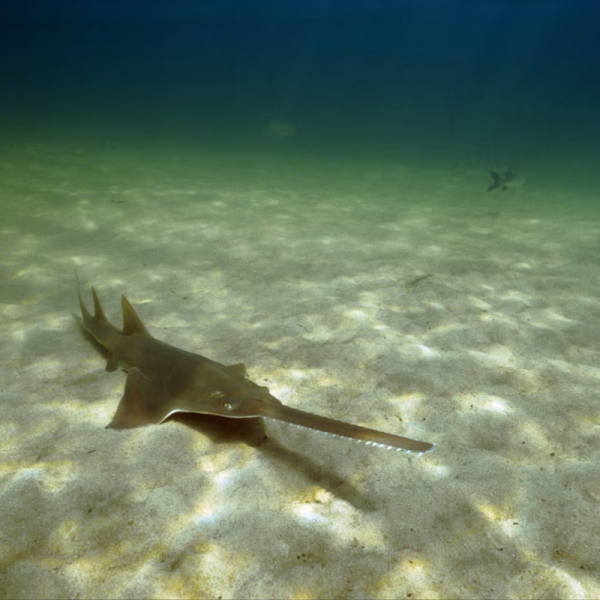
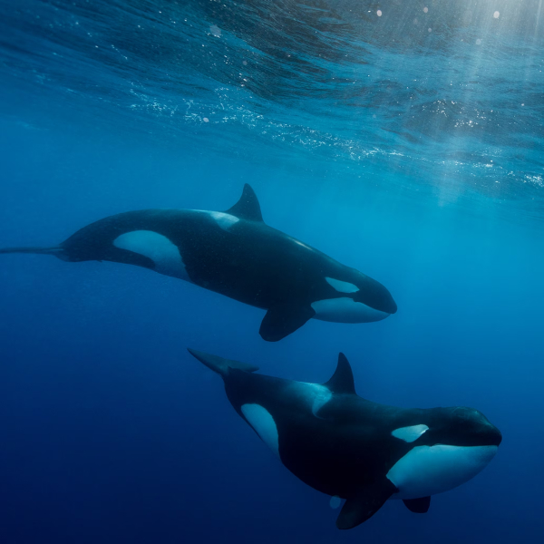

ANIMALS
Prominent section of National Geographic's content, dedicated to exploring the diverse and fascinating world of wildlife. It serves as a hub for education, conservation awareness, and awe-inspiring storytelling about animals and their ecosystems.
articles about a wide range of species, from iconic creatures like lions and elephants to lesser-known species such as pangolins and axolotls.
- 
-
- In Australia, Aboriginal rangers race to save the last sawfish
- Once found in tropical oceans around the world, the largetooth sawfish's range has shrunk by an estimated 60 percent in a decade.
- When a team of Aboriginal rangers and scientists arrived at the billabong, a shrinking oasis in a stretch of tropical savannah in Australia's Northern Territory, they knew the clock was ticking.
- It was September 2024, and the harsh dry season sun meant evaporating water would strand the freshwater sawfish pups within days. At the billabong's edge lay the dehydrated remains of sawfish that had already perished in the receding waters.
- After catching the pups by hand and with nets, the scientists, including Peter Kyne, noted each pup's sex, placing a microchip under their skin, while rangers splashed the animals with water to keep them moist. Over two days, the team put 19 rescued pups into a water tank and drove them a short distance to the Daly River, releasing them into the murky depths.
- 
-
- Orcas are iconic and beloved. Why do we know so little about them?
- Scientists have classified orcas as “data deficient” on conservation lists. These are the questions that keep them up at night.
- Orcas, also known as killer whales, have captivated humans for thousands of years. Their striking appearance and playful intelligence has inspired myths, blockbuster films, memes, and a host of research from marine biologists.
- Yet despite the widespread fascination with orcas, they remain one of the most poorly understood animals in the ocean. Scientists estimate that about 50,000 killer whales roam the global seas, but it's not at all clear where they all live, which populations are threatened by human activities, or what drives their complicated behaviors— including their occasional attacks on boats. We're not even sure whether there's really just one species of orca.